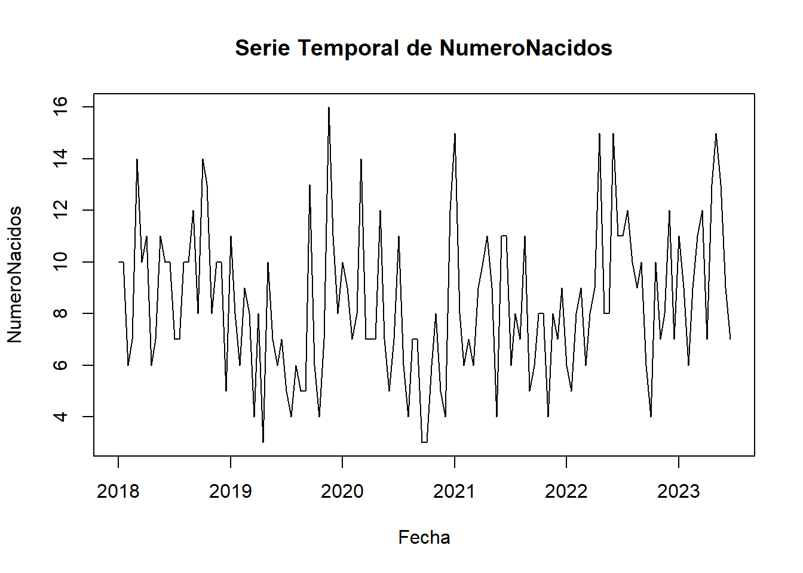
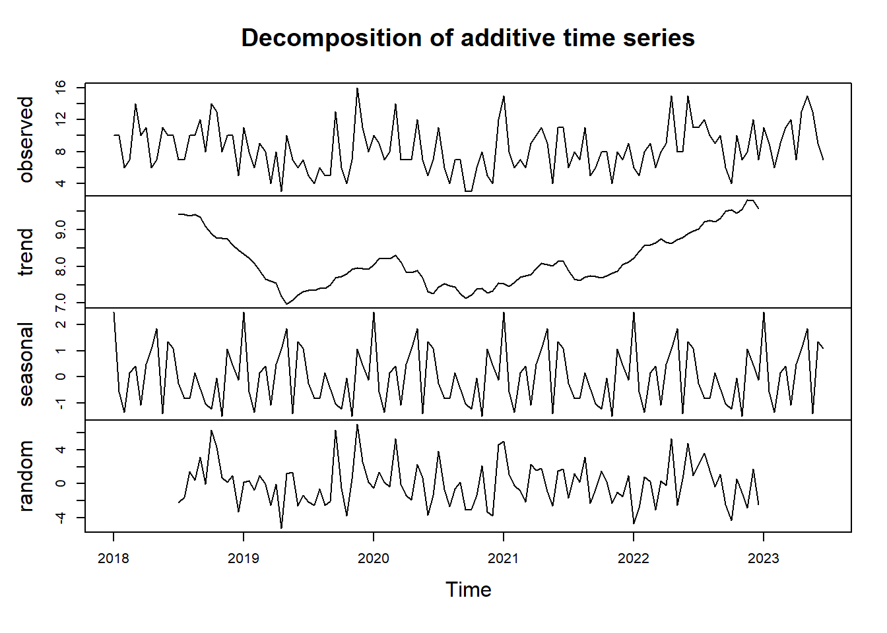
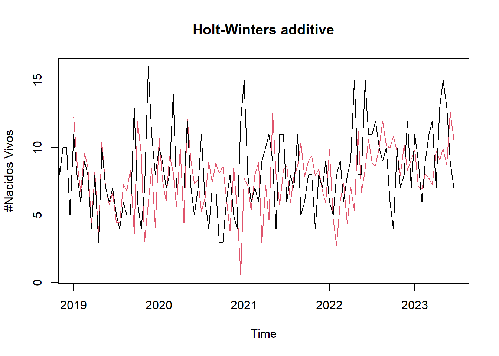
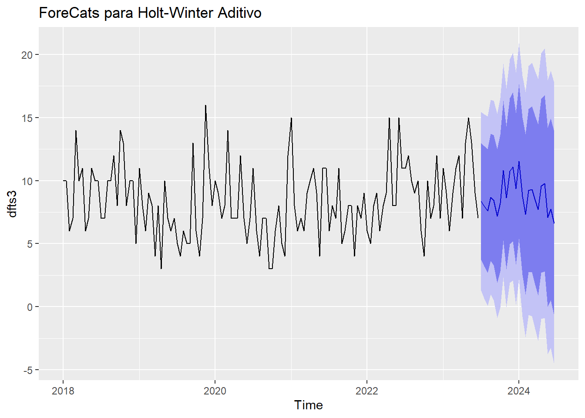
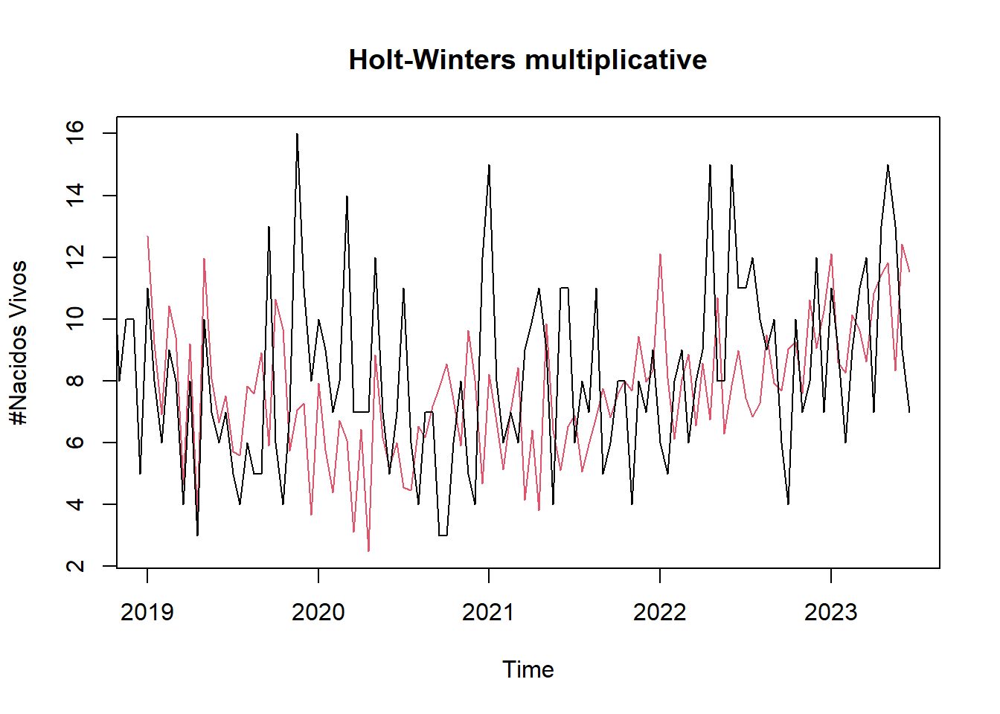
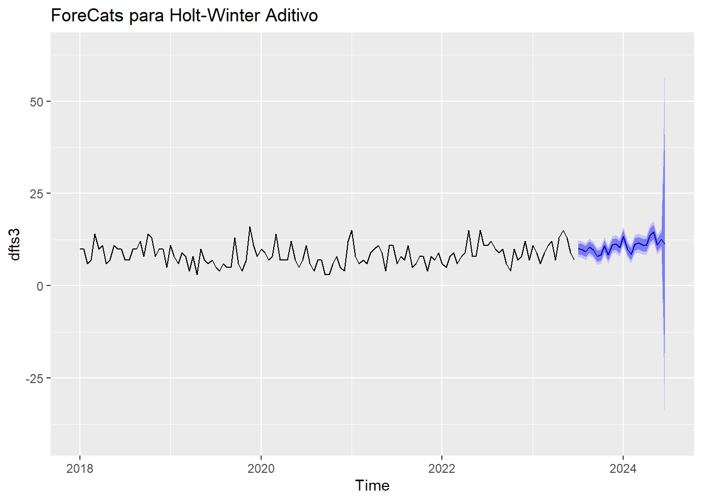

Chapter 8 HoltWinters
El modelo Holt-Winters es una técnica de suavizamiento para análisis de series de tiempo que es especialmente útil cuando los datos exhiben tendencias y patrones estacionales. Este modelo es una extensión del método de suavizamiento exponencial de Holt, diseñado para capturar la estacionalidad además de la tendencia.
Suavizamiento
El suavizamiento significa hacer los datos más regulares o uniformes, eliminando las fluctuaciones aleatorias y destacando tendencias o patrones importantes. El modelo utiliza fórmulas para combinar de manera ponderada estos tres componentes, ajustando los pesos (llamados parámetros de suavizamiento) para que se adapten de la mejor manera a los datos históricos.
Predicción
Para hacer predicciones, el modelo usa los valores estimados de nivel, tendencia y estacionalidad, proyectándolos hacia adelante. Esto es útil para planificar y tomar decisiones basadas en lo que se espera que ocurra en el futuro, considerando patrones pasados.
Recordemos nuevamente nuestros datos:
8.0.1 Nuestros datos.

Validamos si nuestros datos son estacionarios:
##
## Augmented Dickey-Fuller Test
##
## data: serie_temporal
## Dickey-Fuller = -3.3185, Lag order = 5, p-value = 0.07122
## alternative hypothesis: stationary
Tendencia (Trend): La tendencia describe la dirección general en la que los datos cambian con el tiempo. En el contexto del modelo Holt-Winters, esta tendencia se identifica y se incorpora para realizar pronósticos futuros. En nuestra serie temporal, observamos fluctuaciones notables en la tendencia a lo largo de los años. Por ejemplo, a principios de 2019, la tendencia muestra una marcada disminución, seguida de un repunte hacia mediados de 2020 y posteriormente, una nueva caída. Sin embargo, a partir de 2022, la tendencia muestra un claro aumento en el número de nacimientos vivos, lo que sugiere una tendencia alcista continua.
Estacionalidad (Seasonal): En el método Holt-Winters, la estacionalidad representa los patrones recurrentes que se presentan en los datos a intervalos regulares. El modelo detecta y pronostica estas fluctuaciones estacionales para mejorar la precisión de las predicciones. En relación con nuestra serie temporal, la prueba de Dickey-Fuller arrojó un valor por debajo de 0.05, lo que sugiere que nuestra serie de tiempo es estacionaria. Este resultado refuerza la confiabilidad en el modelo al identificar y prever adecuadamente las variaciones estacionales en los datos.
Componente aleatorio (Random): El componente aleatorio en Holt-Winters representa la variación no sistemática o aleatoria en los datos que no puede ser explicada por la tendencia o la estacionalidad. El modelo intenta capturar este componente para mejorar la precisión de los pronósticos, notamos un fuerte ruido en los datos para nuestros valores aleatorios.8.0.2 Aplicando Holt-Winters.
A tener en cuenta los parametros de suavizados del modelo Holt-Winters.
alpha: Este parámetro controla el suavizado exponencial para la estimación de la componente de nivel (nivel base) en el modelo. Indica cuánto peso se le da a las observaciones pasadas para predecir el nivel actual. Un valor más cercano a 1 significa que se da más peso a las observaciones pasadas, lo que resulta en una adaptación más lenta a los cambios.
beta: Este parámetro controla el suavizado exponencial para la estimación de la componente de tendencia en el modelo. Indica cuánto peso se le da a las observaciones pasadas para predecir la tendencia actual. Al igual que alpha, un valor más cercano a 1 significa que se da más peso a las observaciones pasadas.
gamma: Este parámetro controla el suavizado exponencial para la estimación de la componente estacional en el modelo. Indica cuánto peso se le da a las observaciones pasadas para predecir la estacionalidad actual. Al igual que con alpha y beta, un valor más cercano a 1 significa que se da más peso a las observaciones pasadas.
Existen dos formas de aplicar el modelo Holt-Winters:
1. Método Holt-Winters aditivo:
- En el método aditivo, la estacionalidad se agrega a la serie temporal.
- La tendencia y la estacionalidad se suman al nivel base para obtener los valores observados.
- Es más adecuado cuando la magnitud de la estacionalidad no cambia en proporción al nivel de la serie temporal. En otras palabras, la estacionalidad no crece o disminuye con el nivel de los datos.
ahora aplicaremos nuestro modelo Holt-winter additive a nuestra serie de tiempo en el siguiente segmento de codigo:
HW_additive <- HoltWinters(dfts3, seasonal = "additive")
paste("alpha ",HW_additive$alpha, " beta",HW_additive$beta," gamma", HW_additive$gamma)## [1] "alpha 0.24610451750226 beta 0.00257109348712916 gamma 0.375739470223313"En la salida observamos como aplicamos nuestro modelo y tambien podria observar el valor de cada uno de nuestros coeficientes, pero en este caso solo nos interesan nuestros parametros de suavisado, a continuación se explicaran:
alpha: es de 0.24610451750226 nuestro modelo alpha tiene un valor bajo, esto quiere decir que no se le da un mayor peso a las observaciones pasadas.
beta: 0.00257109348712916 este valor es muy bajo lo que quiere decir que el modelo casi que no tiene en cuenta la tendencia actual.
gamma: 0.375739470223313 este valor esta mas cercano a 1 que los anteriores lo cual lo consideramos como valor moderado, el cual otorga peso a las observaciones pasadas y recientes en la estimación de la estacionalidad actual.
Veamos el comportamiento de nuestro modelo Holt-Winters aditivo

En general, el modelo demuestra eficacia en la predicción de valores promedio. Sin embargo, muestra debilidad al enfrentarse a cambios abruptos en la tendencia. Específicamente, el modelo Holt-Winters aditivo no logra anticipar estos cambios. A pesar de ello, procederemos a realizar pronósticos para los próximos 24 meses utilizando este modelo.

Reafirmamos el anterior parrafo:
“En general, el modelo demuestra eficacia en la predicción de valores promedio. Sin embargo, muestra debilidad al enfrentarse a cambios abruptos en la tendencia. Específicamente, el modelo Holt-Winters aditivo no logra anticipar estos cambios.”
cuando intentamos pronosticar los proximos 24 meses, vemos como nuestro modelo se apega demasiado a nuestros valores promedios.
2. Método Holt-Winters multiplicativo:
El Método Holt-Winters multiplicativo es un enfoque de suavización exponencial utilizado en análisis de series temporales para predecir valores futuros. Este método es una extensión del método de suavización exponencial simple, que toma en cuenta tendencias y estacionalidad en los datos. En lugar de tratar estas componentes como aditivas, como se hace en el Método Holt-Winters aditivo, el Método Holt-Winters multiplicativo las considera como multiplicativas. Esto significa que tanto la tendencia como la estacionalidad se aplican multiplicativamente a los niveles de la serie temporal en lugar de sumarse directamente
- En el método multiplicativo, la estacionalidad se multiplica por la serie temporal.
- La tendencia y la estacionalidad se multiplican al nivel base para obtener los valores observados.
- Es más apropiado cuando la magnitud de la estacionalidad varía en proporción al nivel de la serie temporal. En este caso, la estacionalidad aumenta o disminuye en relación con el nivel de los datos.
ahora aplicaremos nuestro modelo Holt-winter multiplicativo a nuestra serie de tiempo en el siguiente segmento de codigo:
## [1] "alpha 0.026371845082938 beta 0.0619052437826439 gamma 0.323835874454532"alpha: es de 0.026371845082938 nuestro modelo alpha tiene un valor bajo, esto quiere decir que no se le da un mayor peso a las observaciones pasadas, es un poco mas alta que el modelo aditivo.
beta: 0.0619052437826439 este valor es muy bajo lo que quiere decir que el modelo casi no tiene en cuenta la tendencia actual, pero es mucho mas alto que el modelo aditivo.
gamma: 0.323835874454532 este valor esta mas cercano a 1 que los anteriores lo cual lo consideramos como valor moderado, el cual otorga peso a las observaciones pasadas y recientes en la estimación de la estacionalidad actual, este valor es el unico que esta por debo con respecto al modelo aditivo.
Veamos el comportamiento de nuestro modelo Holt-Winters multiplicativo

En general, el modelo Holt-Winters multiplicativo demuestra eficacia en la predicción de valores promedio. Sin embargo, muestra debilidad al enfrentarse a cambios abruptos en la tendencia, siendo menos capaz de anticipar estos cambios que su contraparte aditiva. Además, en muchos picos tiende a disminuir el número de nacidos vivos, lo que sugiere que es más conservador en sus predicciones que el modelo aditivo.
A pesar de ello, procederemos a realizar pronósticos para los próximos 24 meses utilizando este modelo.

Reafirmamos el anterior parrafo: En general, el modelo Holt-Winters multiplicativo demuestra eficacia en la predicción de valores promedio. Sin embargo, muestra debilidad al enfrentarse a cambios abruptos en la tendencia, siendo menos capaz de anticipar estos cambios que su contraparte aditiva. Además, en muchos picos tiende a disminuir el número de nacidos vivos, lo que sugiere que es más conservador en sus predicciones que el modelo aditivo. ” cuando intentamos pronosticar los proximos 24 meses, vemos como nuestro modelo se apega demasiado a nuestros valores promedios, al igual que el modelo Holt-Winters Aditivo.
8.0.3 Conclusiones Holt-Winters.
Cuando intentamos pronosticar los próximos 24 meses, observamos cómo nuestro modelo Holt-Winters multiplicativo se adhiere demasiado a los valores promedio, al igual que el modelo Holt-Winters aditivo.
En general, ambos modelos demuestran eficacia en la predicción de valores promedio. Sin embargo, muestran debilidad al enfrentarse a cambios abruptos en la tendencia. Específicamente, el modelo Holt-Winters multiplicativo tiende a ser más conservador en sus predicciones, mientras que el modelo aditivo puede subestimar o sobreestimar estos cambios.
Aunque ambos modelos son útiles para predecir valores promedio, es importante tener en cuenta sus limitaciones al enfrentarse a cambios repentinos en la tendencia. Es posible que se necesiten ajustes adicionales o considerar otros métodos de pronóstico para mejorar la capacidad de anticipar estos cambios, tambien podriamos hacer un hiper parametros tuning para tomar los mejores parametros para nuestros modelos.